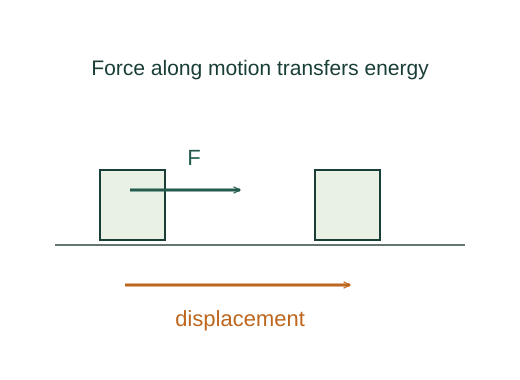

Derive the work–kinetic energy theorem
Work accumulates the component of force along a displacement. Newton’s law turns that accumulated force into a change in a quantity proportional to speed squared: kinetic energy.
What the symbols mean
Wnet: work by all forces; m: constant mass; 𝐯: velocity; d𝐫: displacement element; K: translational kinetic energy.
When this applies
Classical particle motion with constant mass in an inertial frame. For a rotating or deformable object, track the appropriate energy terms.
Developing the argument

Define work along a path
For a short displacement, only the force component along the motion transfers energy through work. Add those contributions along the trajectory.
A closer lookWhy a dot product? ↗Substitute Newton’s law
Use d𝐫 = 𝐯 dt and Σ𝐅 = m d𝐯/dt. The time increments cancel inside the integral.
Recognize a derivative
The derivative of 𝐯 · 𝐯 is twice 𝐯 · d𝐯. Hence integrating the right-hand side gives one half of m times the change in speed squared.
Name the energy
Define K = ½mv² so the result reads Wnet = Kf − Ki. Negative net work reduces speed; work by one individual force is only one contribution to the total.
A worked example
A net force of 10 N parallel to a 3 m displacement does 30 J of work. A 2 kg body starting from rest then has v = √30 ≈ 5.48 m/s.
Derivation behind this calculation ↗A point to keep straight
Zero net force means zero net work, but individual forces can still do nonzero works that cancel.
Check the assumptions and derivation ↗